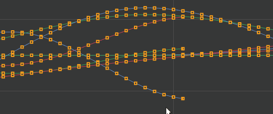
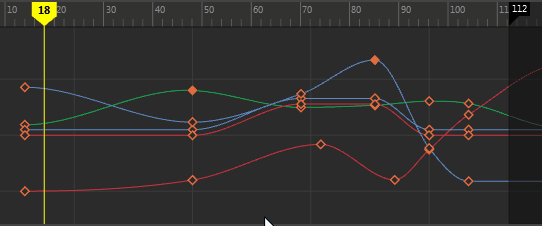
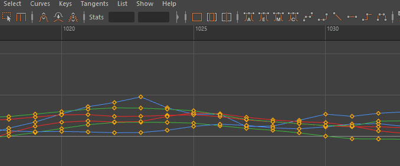

曲线选择是一个包含两个步骤的过程，用于防止意外重新定位曲线。

若要选择并移动曲线，请执行以下操作：
- 单击两个关键帧之间的曲线将其选中。
- 再次单击该曲线即可移动。
若要在选择曲线之前亮显该曲线，请执行以下操作：
在“曲线图编辑器”(Graph Editor)的
“选择”(Select)菜单中，选择
“选择前亮显”(Pre-Select Highlight)。

将选择限制为一条曲线
在处理密集的关键帧动画时，限制选择在尝试隔离关键帧时非常有用。
在“曲线图编辑器”(Graph Editor)的
“选择”(Select)菜单中，选择
“首选选定曲线”(Prefer Selected Curves)。
